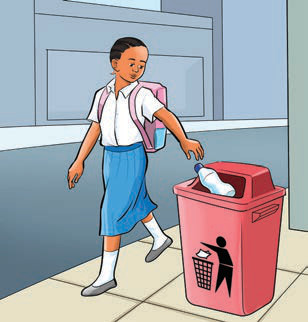
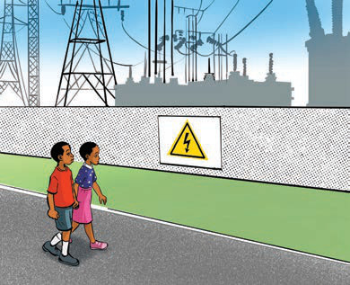

Ninazingatia alama za usalama katika mazingira yangu

Kuzingatia alama za usalama katika mazingira yangu kunanifanya niwe salama.
Shughuli ya tatu
Tumia vifaa vya TEHAMA kuangalia/kusikiliza video au picha zinazoonesha namna ya kuzingatia alama za usalama katika mazingira.
Eleza namna utakavyozitumia alama hizo.
Chunguza picha zifuatazo au sikiliza maelezo yake, kisha bainisha vitendo vya usalama.

